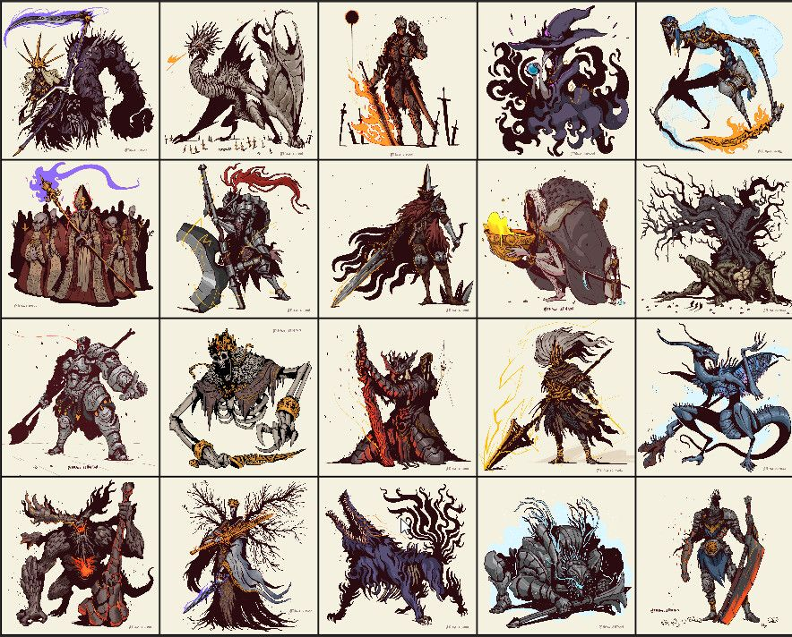
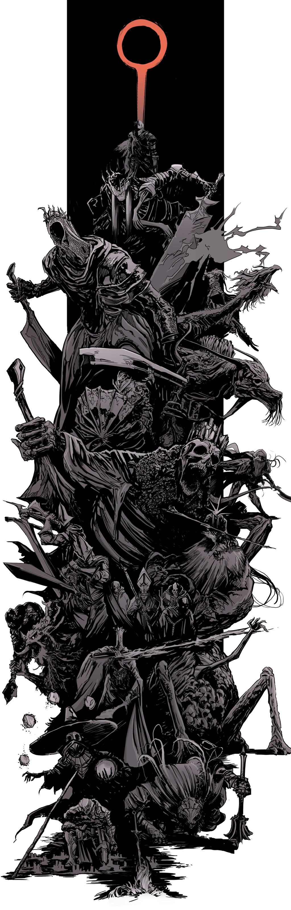
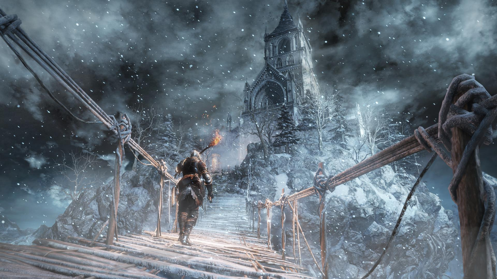
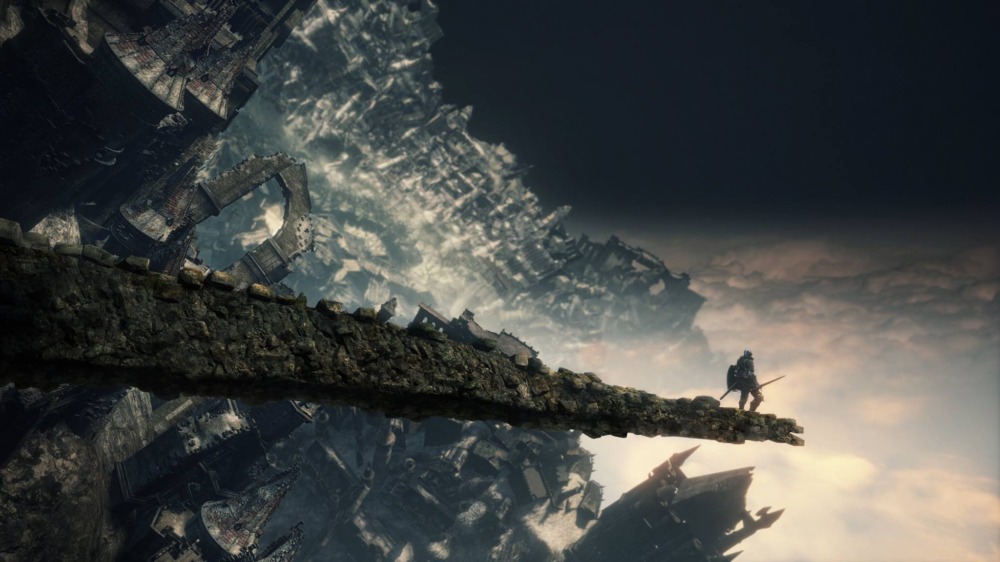

Los jefes son grandes enemigos que controlan el acceso a otras áreas durante el juego. Algunos jefes son opcionales y otros son obligatorios para poder completar el juego.
La mayoría de jefes sueltan almas individuales específicas. Estas pueden ser consumidas para obtener una gran cantidad de almas o pueden ser transpuestas con Ludleth de Courland para obtener armas, escudos o anillos únicos.
Una vez que el jefe de un área ha sido derrotado, se inhabilitará la cooperación con fantasmas. Sin embargo, el jugador todavía será capaz de invocar espíritus oscuros o fantasmas locos para PvP.
Iudex Gundyr
Gran Árbol corrompido *
Sabio de cristal
Diáconos de la Oscuridad
Vigilantes del Abismo
Gran Señor Wolnir
Viejo rey demonio *
Pontífice Sulyvahn
Aldrich, el Devoradioses
Yhorm, el Gigante
Armadura del Asesino de dragones
Oceiros, el Rey Consumido *
Campeón Gundyr *
Lorian, Príncipe Anciano y Lothric, joven príncipe
Alma de Cenizas



Príncipe demonio
Los asteriscos (*) marcan a los jefes opcionales.
